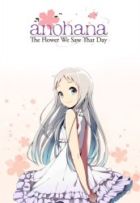

")
 
 IMDB-Wertung: 8.4 / 10
IMDB-Wertung: 8.4 / 10  Metascore:
Metascore: 
Jinta "Jintan" Yadomis Leben befindet sich in einer Sackgasse. Statt zur Schule zu gehen, verbringt er seine Zeit Zuhause mit Nichtstun und niemand scheint sich mehr für ihn zu interessieren. Doch es war nicht immer so. In seiner Grundschulzeit war er der Anführer seiner sechsköpfigen Freundesclique und gemeinsam verbrachten sie eine glückliche Kindheit. Von den Freundschaftsbanden ist sechs Jahre später nichts mehr geblieben, doch als plötzlich das Mädchen Menma wieder in sein Leben tritt und ihn bittet, ihr ihren Wunsch zu erfüllen, muss Jintan die ehemaligen Freunde wieder zusammenführen und dafür auch seine persönlichen Probleme bewältigen.
Jahr: 2011
Dauer: 24 Minuten
FSK: 12
Land: Japan Studio: BS FujiTonspuren: DD2.0 - ,
Untertitel: Deutsch,
Auflösung: 720p (1280x720) Größe: 279 MB
Genre: Drama, Abenteuer, Fantasy, Animation/Trick, Liebe, Mystery, TV-Serie
Regisseur: Tatsuyuki Nagai, Patrick Seitz
Drehbuch: A-1 Pictures
Soundtrack:
Darsteller:
 Ray Chase als Atsumu 'Yukiatsu' Matsyuki
Ray Chase als Atsumu 'Yukiatsu' Matsyuki Erica Lindbeck als Naruko 'Anaru' Anjou
Erica Lindbeck als Naruko 'Anaru' Anjou Michelle Ruff als Atsumu 'Yukiatsu' Matsuyuki
Michelle Ruff als Atsumu 'Yukiatsu' Matsuyuki Tara Sands als Jinta 'Jintan' Yadomi
Tara Sands als Jinta 'Jintan' Yadomi Kirk Thornton als Atsushi Yadomi
Kirk Thornton als Atsushi Yadomi Karen Strassman als Irene Honma
Karen Strassman als Irene Honma Cherami Leigh als Haruna
Cherami Leigh als Haruna Christopher Corey Smith als Manabu Honma
Christopher Corey Smith als Manabu Honma Takahiro Sakurai als Matsuyuki Atsumu
Takahiro Sakurai als Matsuyuki Atsumu Kaiji Tang als Tetsudo 'Poppo' Hisakawa
Kaiji Tang als Tetsudo 'Poppo' Hisakawa Laura Post als Toko Yadomi
Laura Post als Toko Yadomi Saori Hayami als Chiriko Tsurumi
Saori Hayami als Chiriko Tsurumi Miyu Irino als Jinta Yadomi
Miyu Irino als Jinta YadomiDatei: X:\HD-Anime-Serien\AnoHana Die Blume die wir an jenem Tag sahen\AnoHana Die Blume die wir an jenem Tag sahen E01 Die Super Peace Busters.mkv seit 27.06.2017
Festplatte: Gemischt-01+Anime
 Es gibt insgesamt 67 Filme in der Gruppe 'HD-Anime-Serien'
Es gibt insgesamt 67 Filme in der Gruppe 'HD-Anime-Serien'